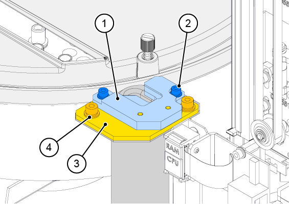
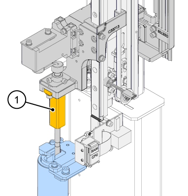

This topic includes information about how to adjust the tip waste chute for the aliquot sample pipettor.
Safety Reminder
Servicing the DxI 9000 instrument involves potential risks for pinch and puncture, electrical shock, and exposure to hazardous materials. You must mitigate these risks by taking appropriate countermeasures. See
Safety for more information.
In the Machine Control App go to
MENU > Machine Control > AliquotSamplePipettor > AliquotSamplePipettor.Assembly > AliquotSamplePipettor.TipWastePositionSensor.
On the Action tab select
GetState and select
state.
Select
Execute. If the notification
AliquotSamplePipettor.TipWastePositionSensor - DeviceStatus(Ok) is displayed, the tip waste position sensor is aligned correctly and the sensor detects the flag.
If the tip waste position sensor is not aligned correctly, align the aliquot sample pipettor to the solid waste chute. See
Aligning the Aliquot Sample Pipettor for more information.
If the tip waste position sensor is correctly aligned, you can manually adjust the tip waste chute and its components.
Figure 333: Tip Waste Chute Components

1
Tip stripper
2
Tip stripper screw (1 of 2)
3
Chute plate
4
Chute plate screw (1 of 2)
Note: If the white plastic sample pipettor mandrel holder appears to be bent and is not perpendicular when aligning to the waste chute, you may need to replace the mandrel holder.

1
Mandrel holder
To adjust the tip stripper:
Loosen (but do not remove) the two screws that hold the tip stripper in place.
Adjust the position of the tip stripper to the right.
Note: You may need to adjust the alignment value for the AliquotSamplePipettor.XAxis.Motor.TipSolidWaste.XPosition alignment key using positive step values.
Note: You may need to adjust the alignment value for the AliquotSamplePipettor.XAxis.Motor.TipSolidWaste.XPosition alignment key using positive step values.